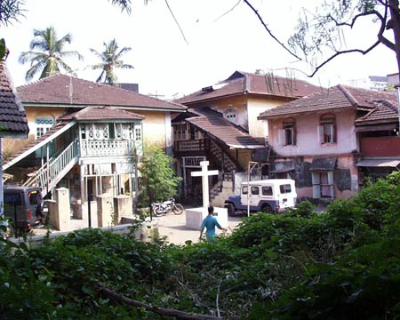

Rustic Ranwar
This article has been written for the Celebrate Bandra ’05 festival held in Bandra in November 2005.
Navigating the permanent traffic jam that is Hill Road today, visitors to Bandra might be tempted to escape life-and-limb threatening traffic by using a sleepy, narrow gully called Langrana Lane that takes off to the south of ‘Hill Road’ near the Holy Family Hospital. And if they did so, they would suddenly find themselves in a different world. Old style cottages and double storeyed buildings with red ‘Mangalore’ tiles on their roofs, along a narrow road that seems to wind erratically to dodge the houses located haphazardly, without apparent rhyme or reason. This is Ranwar, one of the original 24 pakhadis that made up Bandra since the earliest documented history in early 1700s. And it has managed to retain its village character even as present-day ‘development’ has hemmed it in on all sides.

Ranwar today, is the confusion of houses adjoining a central street, Veronica Street. This narrow lane meanders from Waroda Road in the north, roughly in a southward direction, barely a quarter of a kilometer in length and emerges in the St. Sebastian’s Housing Scheme, which in turn abuts on the Bandra Reclamation. The street itself was probably named around 1906-07, when a prominent resident of Ranwar, Peter Pereira, was municipal councillor in what was then the Bandra Municipality. The reason it is called Veronica Street relates to a traditional Christian tableau held in the season of Lent during Passion Week, depicting the events surrounding the death of Jesus. In those days, a girl playing the role of Veronica, one of the followers of Christ, was formally dressed in a house in Ranwar and carried on a palanquin in procession to St Andrew Church.
During the solemn procession, when Christ carried his cross to Calvary, there was an annual re-enactment of the scene that took place about 2000 years ago, when, unable to bear the sight of Christ suffering and staggering under the whips and lances of the Roman soldiers, Veronica approached him with a soothing cloth to wipe his bloody face. In recognition of her courage and compassion, the legend has it, Veronica was left with an image of Christ’s face on the cloth she used. This re-enactment is performed even today, though Veronica no longer sallies forth from Ranwar as she once did.
In 1534, Bahadur Shah of Gujarat, who ruled over this area, ceded the coastal tract from Bombay to beyond Bassein, to the Portuguese. This included the island of Salsette, of which Bandra was part. At the time Bandra was composed of 25 pakhadis or hamlets and Ranwar may well have been one of them. In 1548 Bandra along with other places was granted by the Portuguese Crown to Antonio Pesoa and his wife Isabel Botelho for the duration of their lives. By 1568 Antonio Pesoa and Isabel Botelho had both expired and the Portuguese Crown granted Bandra to the Jesuits as a revenue source to support their work.
In 1583 the first place of public Catholic worship was constructed on the shores of the Mahim creek. It was called Santa Anna. The non-parochial St Andrew was built around 1599-1601. By 1616 the Catholic population was around 6,000 and there was felt the need for another parish in Bandra. The Koli portion of the Bandra Catholic population was assigned to the Church of St Andrew. Ranwar, a pakhadi of cultivators, remained part of the old Santa Anna parish.
As far as preserved historical records are concerned, the earliest reference to Ranwar dates to 1716, pertaining to a birth entry in the Register of the Church of Santa Anna, now kept at St Andrew Church. The residents then were the Pereiras, Fonsecas, Pessoas, Gomes, Gracias, Rodrigues Dias and Gonsalves and others.
Another prominent family, the Xaviers, were originally Pereiras. The legend has it that in the 1700s the family was travelling to Goa by sea and their boat was caught in a terrible storm. In mortal fear of their lives they fell on their knees and prayed to St Francis Xavier to spare their lives. This duly done, they immediately changed their name from ‘Pereira’ to ‘Xavier’ in acknowledgement of the debt they owed the saint.
Notwithstanding this, there was always a predominance of Pereiras in Ranwar. In fact there is still a saying doing the rounds today, among non-Pereiras of course, that if you throw a stone in Ranwar you would hit either a Pereira or a pig. Nowadays though, the Pereiras would be more at risk, since for more than the last forty years, free-range pigs, once a common sight on the streets in villages like Ranwar, are a thing of the past.
Equally lost in time, are the unforgettable pig-chases, occasions when the animals were chased frantically all over the village, indiscriminately invading gardens and even verandas and crossing roads and culminating in ultimate capture, which was heralded by the ear shattering squeals and grunts of the doomed animal. This event happened a few times each year, especially just before Christmas, Easter and the Bandra Feast, a precursor to the sarpotel, vindaal and delicious sausages that appear on every village table on the feast day.
In earlier days, the area was mostly given to rice cultivation though there were also extensive vegetable gardens. The region in fact was noted for a special variety of sweet onions, which until recently could be seen hanging in bundles in almost every local kitchen. In addition there were coconut groves along the shore and mango orchards inland, all owned by the Jesuits.
Ranwar itself was a rice-producing village and this can be deduced from the arrangement of the houses in the village. Rice farmers traditionally are loath to waste a good paddy field on building houses. Villages of rice farmers, unlike those of vegetable growers, therefore are invariably built on high ground or on rocky outcrops and perforce are built close to one another with the streets having to thread their way between houses as best they can. Safety was another reason: pirates regularly raided the area because of the rich pickings available. Even today, there are residents who can recall stories told by grandparents about how their parents every so often had to flee to the fields because of reports of marauding bands in the area.
Ranwar was a tenant village of the Jesuits until 1739 when the Portuguese evacuated Bandra and the Marathas took possession of it. In December 1774, the Marathas were ejected by the British who allowed the farmers to become proprietors of the land they cultivated. And very good land it was, both because of its fertility and situation. At the time commerce between the mainland and British Bombay was by ferry from Bandra, which in those days was an important, if minor port, as can be judged by the fort that still exists in part at Land’s End. It was also a major access route to Bombay harbour via Sion. (This was when Bombay was still a set of islands and the Sion Causeway didn’t exist)
At that time the port was near where the mosque on S.V. Road now stands and Ranwar was just a farmer’s hop step and jump away. Bombay already was a commercial hub and most of rice and vegetable imports were from and through Bandra. This was a golden era for Ranwar judging from the houses that were built at the time. The earliest constructions still standing, date back to those years.
This situation changed in 1845 when the Mahim Causeway was built and even more in 1867 when the railway line was laid. Beside the loss of trade, siltation due to the causeway and the railway bridge soon made the port unviable. Ranwar was no longer near the ‘front door’ to Bombay. However, the improved communications made for new opportunities. Job opportunities in Bombay now increased.
In 1792, Fr Francis de Mello of Povoacao, now D’monte Street, initiated literacy classes in a shed within St Andrew’s Church compound. The language of instruction was Portuguese and thus students from Bandra, including Ranwar, which was the closest pakhadi to the Church, became acquainted with the Roman script.
This familiarity with the Roman script enabled them to learn English, which was a necessity in commercial Bombay. By the second half of the nineteenth century an English medium school, the St Stanislaus institution, had opened. Likewise a girls’ school, St Joseph’s Convent had commenced classes in 1863. Students who wished to study further and appear for their matriculation, went to Bombay.
Agriculture for many was no longer the main livelihood and this was fortunate because there was now need for alternate use of the land.
A pestilence was recorded in Bandra in 1700, which severely affected cultivation. Later in the nineteenth century epidemics of typhoid, cholera etc are known to have afflicted Bandra. The old villages, with the houses crowded together were death traps. In the closing years of the nineteenth century, the bubonic plague killed hundreds of inhabitants.
Detailed records of Catholic victims are preserved in the registers of the churches of St Andrew, St Peter and Mount Carmel. Whenever the plague struck, people would flee to the relative safety of temporary shelters in their fields.
Signs of those times still survive today. At almost every extremity of the village there are religious shrines as a means of obtaining divine protection from the dread disease. And even today, one of the invocations said during the family Rosary “St Roque and St Sebastian save us from plague and pestilence” bears witness to the very real danger that this affliction posed for villages like Ranwar.
Because of the frequency of the epidemics, many of the new educated gentry now began building houses in what were once their rice fields to the south of the original village, and this marked the second phase of house construction in the village.
Ranwar has had a very close and active community down the years. The many organisations that were and still are active in the area are witness to that. Around 1924, well before the Bandra Gymkhana started, the Rest Ranwar was founded by a group of Ranwarites.
The club produced expert badminton, tennis, cricket football and hockey and other sportspeople down the years. It has a small pavilion for indoor activities as well as outdoor playing grounds. The annual Christmas and New Year dances at the ‘Rest’ as it was popularly known, attracted crowds from all over Bombay. Today, after being dormant for many years, the Club is being revived once again.
Ranwar was also home to a literary group, called The Varsity Circle, founded by a group of men from Bandra. They conducted debates and held talks on various topics of interest and also produced a magazine. This was handwritten in classic copperplate script, and which was in great demand even outside the circle of members.
The Varsity Circle was a literary training ground for the members and two of the founders later went on to become principals, one of St John the Baptist High School, Thane and the other of St Teresa’s High School, Girgaum. The Varsity Circle encouraged literary, acting and public speaking talent.
Another founder was the renowned, author and playwright, Arty Pereira or ‘Doc’, who through the years trained hundred’s of students. His book Success in 30 Days written in the 1950s was a best seller when first published (and is still in print). Thirty years after his death, people from all over the country were still writing letters to him, to thank him and to tell of the effect the book has had on their lives.
Any story of Ranwar would be woefully incomplete without mention of the Ranwar Funds. These are chit funds, the oldest of which, was started more than 150 years ago and which is still running smoothly. There are the seasonal funds meant to provide a lump sum at times of extra expenses. And so there is the Christmas Saving Fund, the Bandra Feast Fund and the Monsoon Fund. And finally there is the Death Benefit Fund, which was once one of the most appreciated. On the day of the death of a member, an envelope would be discreetly handed over to the family to meet the expenses of the funeral.
Besides, the monetary benefits, the chit ‘Funds’ and groups that have endured for decades, are perhaps the very reason why village communities like Ranwar have been so close knit. Every year, all the members would gather for an Annual Meeting, which was both business and pleasure. Even today, when the original financial objectives of the Funds hardly matter, membership is full, and often passed on as an inheritance. Annual dinners are well attended and start with the statement of accounts being read, queried and passed after which the mandatory khimaad, a potent, typically East Indian brew, made from ‘country’ alcohol, tea and spices and drunk piping hot, is served. This is a point in the proceedings that advertises itself to the neighboring residents in no uncertain terms, for after a few sips of khimaad the decibel level of the gathering increases logarithmically. Earlier the country liquor was locally procured, even during the prohibition era, when the area around Ranwar was the source of some of the finest brews in town.
Perhaps the quaintest of the groups, and something unique to Ranwar, is the ‘One-Four Fund’. This, women’s group was started more than 50 years ago. The name derives from the monthly contribution of each member. For years it stayed put at a rupee and four annas. There were 12 members originally and one rupee was for the monthly share, while the four annas was the social contribution, out of which these amazing women produced their sumptuous, monthly dinner. Every home cooked dinner is a gourmet’s delight. Membership was in such demand that membership was expanded to 24. Even when the women move out of Ranwar, they still retain membership. There is a waiting list for new members with special rights for a child of a deceased member.
The village today, like all the other heritage villages in Bandra is under siege. Present day Ranwar reflects changed times. The once quiet, peaceful lanes are now bustling thoroughfares for traffic seeking a short route from the Bandra Reclamation to ‘Hill Road’ and beyond. The ever-present dust and noise and a dozen traffic jams a day are now accepted with stoic resignation.

The most telling and poignant reminder of an era gone forever, is the sight today of village doors, closed in the daytime. Was a time a few years ago, when the door to every home, was opened at daybreak or a little before and kept open the entire day through, with little, swivel wooden doorstops at the bottom to prevent the wind from slamming them shut. Both the front and the back entrances were left wide open, welcoming neighbours and friends who might happen to drop in. Theft was a rarity as was the presence of a stranger in the neighbourhood. Every passerby was a familiar face and most called out a greeting or stopped for a short chat and a bit of gossip. Time was to spend in renewing contacts constantly.
Change is inevitable and to resist change is futile and foolish. Perhaps localities and lifestyles, now in their twilight, will give way to different, eventually equally rich and valuable experiences. If that is so, then the present, impersonal and sometimes adversary relationships nurtured by today’s housing societies and high rises can be viewed as a transient feature, en route.
And meanwhile, one can even today, travel to places like Gorai and Uttan to the north, or south to Korlai and Rev Danda and catch a glimpse of yesterday’s Ranwar, or Pali or Sherly. Of quiet, shady lanes between quiet, peaceful, red tiled houses and, if one is patient, the sight of a mother hen and several cheeping chicks trickling across the street in search of a scratched meal, or a lone, grunting pig, rooting around - tomorrow’s pork vindaal on hooves. But for how long will these quaint places endure? Development, that dread tide in our affairs and lives, cannot be far off and with it more cause for wistful nostalgia.